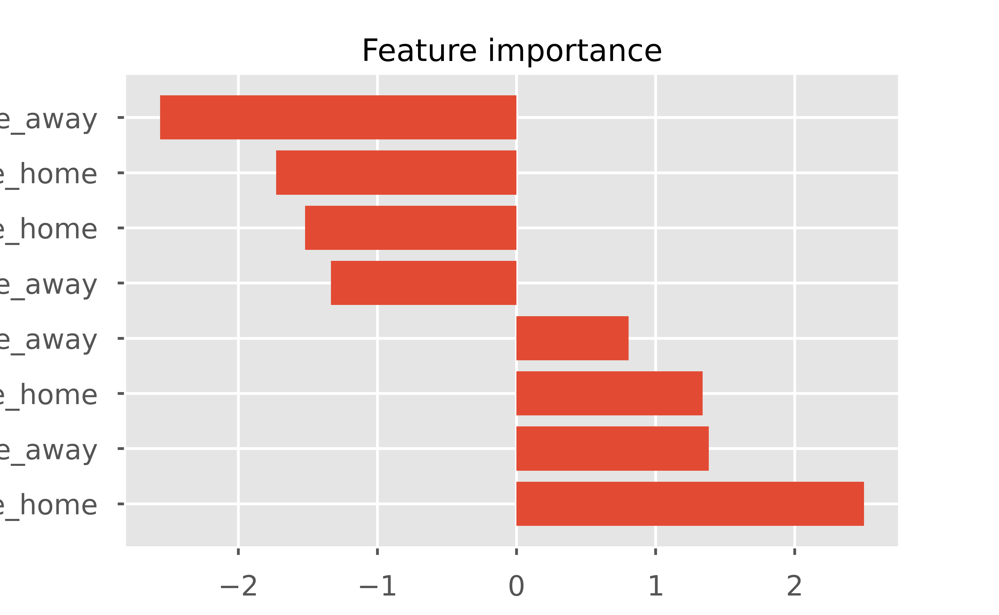

Intro to NFL game modeling in Python
In this post we are going to cover modeling NFL game outcomes and pre-game win probability using a logistic regression model in Python and scikit-learn. Previous posts on Open Source Football have covered engineering EPA to maximize it’s predictive value, and this post will build partly upon those written by Jack Lichtenstien and John Goldberg.
The goal of this post will be to provide you with an introduction to modeling in Python and a baseline model to work from. Python’s de-facto machine learning library, sklearn, is built upon a streamlined API which allows ML code to be iterated upon easily. To switch to a more complex model wouldn’t take much tweaking of the code I’ll provide here, as every supervised algorithm is implemented via sklearn in more or less the same fashion. As with any machine learning task, the bulk of the work will be in the data munging, cleaning, and feature extraction/engineering process.
For our features, we will be using exponentially weighted rolling EPA. The window size for the rolling average will be 10 for all teams before week 10 of the season. This means that prior to week 10, some prior season data will be used. If we’re past week 10, the entire, and only the entire, season will be included in the calculation of rolling EPA. This dynamic window size idea was Jack Lichtenstien’s, and his post on the topic is linked above. His post showed that using a dynamic window size was slightly more predictive than using a static 10 game window.
EPA will be split in to defense and offense for both teams, and then further split in to passing and rushing. This means in total, we’ll have 8 features:
- Home team passing offense EPA/play
- Home team passing defense EPA/play
- Home team rushing offense EPA/play
- Home team rushing defense EPA/play
- Away team passing offense EPA/play
- Away team passing defense EPA/play
- Away team rushing offense EPA/play
- Away team rushing defense EPA/play
The target will be a home team win.
Each of these features will be lagged one period, and then an exponential moving average will be calculated.
We’re going to be using Logistic Regression as our model. Logistic Regression is used to model the probability of a binary outcome. The probability we are attempting to model here is the probability a home team wins given the features we’ve laid out above. We’ll see later that our LogisticRegression object has a predict_proba method which shows us the predicted probability of a 1 (home team win) or 0 (away team win). This means the model can be used as a pre-game win probability model as well.
We’ll be training the model with data from 1999 - 2019, and leaving 2020 out so we can analyze it further at the end of the post.
To start, let’s import the libraries we’ll need for this notebook. You’ll need to have sklearn, pandas, numpy, matplotlib, and nflfastpy installed to be able to run this code. All these libraries can be installed via pip.
import nflfastpy as nfl
import pandas as pd
from matplotlib import pyplot as plt
import matplotlib.ticker as plticker
import numpy as np
from sklearn.model_selection import cross_val_score
from sklearn.linear_model import LogisticRegression
plt.style.use('seaborn-talk')
plt.style.use('ggplot')
pd.set_option('display.max_columns', 7)The code block below will pull nflfastR data from the nflfastR-data repository and concatenate the seperate, yearly DataFrames in to a single DataFrame we’ll call data. This code block will take anywhere from 2-5 minutes.
data = pd.concat([nfl.load_pbp_data(season).assign(season=season) for season in range(1999, 2021)])The code below is going to calculate a rolling EPA with a static and dynamic window. I’ve included both, although we’ll only be using the rolling EPA with the dynamic window in our model.
def dynamic_window_ewma(x):
"""
Calculate rolling exponentially weighted EPA with a dynamic window size
"""
values = np.zeros(len(x))
for i, (_, row) in enumerate(x.iterrows()):
epa = x.epa_shifted[:i+1]
if row.week > 10:
values[i] = epa.ewm(min_periods=1, span=row.week).mean().values[-1]
else:
values[i] = epa.ewm(min_periods=1, span=10).mean().values[-1]
return pd.Series(values, index=x.index)
# seperate EPA in to rushing offense, rushing defense, passing offense, passing defense for each team
rushing_offense_epa = data.loc[data['rush_attempt'] == 1, :]\
.groupby(['posteam', 'season', 'week'], as_index=False)['epa'].mean()
rushing_defense_epa = data.loc[data['rush_attempt'] == 1, :]\
.groupby(['defteam', 'season', 'week'], as_index=False)['epa'].mean()
passing_offense_epa = data.loc[data['pass_attempt'] == 1, :]\
.groupby(['posteam', 'season', 'week'], as_index=False)['epa'].mean()
passing_defense_epa = data.loc[data['pass_attempt'] == 1, :]\
.groupby(['defteam', 'season', 'week'], as_index=False)['epa'].mean()
# lag EPA one period back
rushing_offense_epa['epa_shifted'] = rushing_offense_epa.groupby('posteam')['epa'].shift()
rushing_defense_epa['epa_shifted'] = rushing_defense_epa.groupby('defteam')['epa'].shift()
passing_offense_epa['epa_shifted'] = passing_offense_epa.groupby('posteam')['epa'].shift()
passing_defense_epa['epa_shifted'] = passing_defense_epa.groupby('defteam')['epa'].shift()
# In each case, calculate EWMA with a static window and dynamic window and assign it as a column
rushing_offense_epa['ewma'] = rushing_offense_epa.groupby('posteam')['epa_shifted']\
.transform(lambda x: x.ewm(min_periods=1, span=10).mean())
rushing_offense_epa['ewma_dynamic_window'] = rushing_offense_epa.groupby('posteam')\
.apply(dynamic_window_ewma).values
rushing_defense_epa['ewma'] = rushing_defense_epa.groupby('defteam')['epa_shifted']\
.transform(lambda x: x.ewm(min_periods=1, span=10).mean())
rushing_defense_epa['ewma_dynamic_window'] = rushing_defense_epa.groupby('defteam')\
.apply(dynamic_window_ewma).values
passing_offense_epa['ewma'] = passing_offense_epa.groupby('posteam')['epa_shifted']\
.transform(lambda x: x.ewm(min_periods=1, span=10).mean())
passing_offense_epa['ewma_dynamic_window'] = passing_offense_epa.groupby('posteam')\
.apply(dynamic_window_ewma).values
passing_defense_epa['ewma'] = passing_defense_epa.groupby('defteam')['epa_shifted']\
.transform(lambda x: x.ewm(min_periods=1, span=10).mean())
passing_defense_epa['ewma_dynamic_window'] = passing_defense_epa.groupby('defteam')\
.apply(dynamic_window_ewma).values
#Merge all the data together
offense_epa = rushing_offense_epa.merge(passing_offense_epa, on=['posteam', 'season', 'week'], suffixes=('_rushing', '_passing'))\
.rename(columns={'posteam': 'team'})
defense_epa = rushing_defense_epa.merge(passing_defense_epa, on=['defteam', 'season', 'week'], suffixes=('_rushing', '_passing'))\
.rename(columns={'defteam': 'team'})
epa = offense_epa.merge(defense_epa, on=['team', 'season', 'week'], suffixes=('_offense', '_defense'))
#remove the first season of data
epa = epa.loc[epa['season'] != epa['season'].unique()[0], :]
epa = epa.reset_index(drop=True)
epa.head() team season week ... epa_shifted_passing_defense ewma_passing_defense \
0 ARI 2000 1 ... 0.269840 0.119870
1 ARI 2000 2 ... -0.069413 0.084280
2 ARI 2000 4 ... 0.311383 0.126717
3 ARI 2000 5 ... 0.500345 0.196184
4 ARI 2000 6 ... 0.058499 0.170690
ewma_dynamic_window_passing_defense
0 0.119870
1 0.084280
2 0.126717
3 0.196184
4 0.170690
[5 rows x 19 columns]We can plot EPA for the Green Bay Packers alongside our moving averages. We can see that the static window EMA and dynamic window EMA are quite similar, with slight divergences towards season ends.
tm = epa.loc[epa['team'] == 'GB', :].assign(
season_week = lambda x: 'w' + x.week.astype(str) + ' (' + x.season.astype(str) + ')'
).set_index('season_week')
fig, ax = plt.subplots()
loc = plticker.MultipleLocator(base=16) # this locator puts ticks at regular intervals
ax.xaxis.set_major_locator(loc)
ax.tick_params(axis='x', rotation=75) #rotate the x-axis labels a bit
ax.plot(tm['epa_shifted_passing_offense'], lw=1, alpha=0.5)
ax.plot(tm['ewma_dynamic_window_passing_offense'], lw=2)
ax.plot(tm['ewma_passing_offense'], lw=2);
plt.axhline(y=0, color='red', lw=1.5, alpha=0.5)
ax.legend(['Passing EPA', 'EWMA on EPA with dynamic window', 'Static 10 EWMA on EPA'])
ax.set_title('GB Passing EPA per play')
plt.show();
Now that we have our features compiled, we can begin to merge in game result data to come up with our target variable.
schedule = data[['season', 'week', 'home_team', 'away_team', 'home_score', 'away_score']]\
.drop_duplicates().reset_index(drop=True)\
.assign(home_team_win = lambda x: (x.home_score > x.away_score).astype(int))
df = schedule.merge(epa.rename(columns={'team': 'home_team'}), on=['home_team', 'season', 'week'])\
.merge(epa.rename(columns={'team': 'away_team'}), on=['away_team', 'season', 'week'], suffixes=('_home', '_away'))
df.head() season week home_team ... epa_shifted_passing_defense_away \
0 2000 1 NYG ... 0.269840
1 2000 1 PIT ... -0.208568
2 2000 1 WAS ... -0.368611
3 2000 1 MIN ... 0.365886
4 2000 1 LA ... -0.078273
ewma_passing_defense_away ewma_dynamic_window_passing_defense_away
0 0.119870 0.119870
1 -0.197401 -0.197401
2 0.001883 0.001883
3 0.106074 0.106074
4 -0.089393 -0.089393
[5 rows x 39 columns]We’ll set some variables to isolate our target and features. Here, we are only including the dynamic window columns. I’ve found that the dynamic window does produce a slightly better model score. You’re welcome to use the EWMA features with the static window size.
target = 'home_team_win'
features = [column for column in df.columns if 'ewma' in column and 'dynamic' in column]
for feature in features:
print(feature)ewma_dynamic_window_rushing_offense_home
ewma_dynamic_window_passing_offense_home
ewma_dynamic_window_rushing_defense_home
ewma_dynamic_window_passing_defense_home
ewma_dynamic_window_rushing_offense_away
ewma_dynamic_window_passing_offense_away
ewma_dynamic_window_rushing_defense_away
ewma_dynamic_window_passing_defense_awayHere, we finally train and test our model. In sklearn, each supervised algorithm is implemented in the same fashion, First, you bring in your class (which we did earlier in the code). You then instantiate the class, providing model hyperparameters at instantiation. Here, since we’re just doing Logistic Regression, we have none (although sklearn allows us to provide C as a hyperpameter - which controls regularization). Then, you call the fit method which trains your model. For evaluating model accuracy, you have a couple options. Notice here we did not split our model in to train and test sets, as we’ll be using 10-fold cross validation to train and test instead, using the cross_val_scores function we brought in earlier.
df = df.dropna()
X = df.loc[df['season'] != 2020, features].values
y = df.loc[df['season'] != 2020, target].values
clf = LogisticRegression()
clf.fit(X, y)LogisticRegression()accuracy_scores = cross_val_score(clf, X, y, cv=10)
log_losses = cross_val_score(clf, X, y, cv=10, scoring='neg_log_loss')
print('Model Accuracy:', np.mean(accuracy_scores))Model Accuracy: 0.6352219667367291print('Neg log loss:', np.mean(log_losses))Neg log loss: -0.6384736044609878fig, ax = plt.subplots()
feature_names = ['_'.join(feature_name.split('_')[3:]) for feature_name in features]
coef_ = clf.coef_[0]
features_coef_sorted = sorted(zip(feature_names, coef_), key=lambda x:x[-1], reverse=True)
features_sorted = [feature for feature, _ in features_coef_sorted]
coef_sorted = [coef for _, coef in features_coef_sorted]
ax.set_title('Feature importance')
ax.barh(features_sorted, coef_sorted);
plt.show();
We see our model has about a 63.5% accuracy score. Not terrible, considering if you head over to nflpickwatch.com, you’ll see that the best experts tend to cluster around 68%.
We also found the negative log loss. This is important because the model could have a lot of value as a win probability model as opposed to a straight pick’em model.
The model can definitely be improved. Some possible improvements and things I’d like to explore in future iterations of this model:
- Using John Goldberg’s idea of opponent-adjusted EPA
- Weighing EPA by win probability
- Engineering other features beyond EPA, including special teams performance
- Try out more complex models + tuning
Something fun we can do now is see how the model would have predicted this past season. Notice we took out 2020 data from our training data, and so now we are free to see how the model would have done in 2020 (since none of the 2020 data was used for training).
df_2020 = df.loc[(df['season'] == 2020)].assign(
predicted_winner = lambda x: clf.predict(x[features]),
home_team_win_probability = lambda x: clf.predict_proba(x[features])[:, 1]
)\
[['home_team', 'away_team', 'week', 'predicted_winner', 'home_team_win_probability', 'home_team_win']]
df_2020['actual_winner'] = df_2020.apply(lambda x: x.home_team if x.home_team_win else x.away_team, axis=1)
df_2020['predicted_winner'] = df_2020.apply(lambda x: x.home_team if x.predicted_winner == 1 else x.away_team, axis=1)
df_2020['win_probability'] = df_2020.apply(lambda x: x.home_team_win_probability if x.predicted_winner == x.home_team else 1 - x.home_team_win_probability, axis=1)
df_2020['correct_prediction'] = (df_2020['predicted_winner'] == df_2020['actual_winner']).astype(int)
df_2020 = df_2020.drop(columns=['home_team_win_probability', 'home_team_win'])
df_2020.sort_values(by='win_probability', ascending=False).reset_index(drop=True).head(10) home_team away_team week predicted_winner actual_winner win_probability \
0 KC NYJ 8 KC KC 0.874193
1 KC DEN 13 KC KC 0.845162
2 LA NYJ 15 LA NYJ 0.833220
3 LA NYG 4 LA LA 0.832061
4 SF PHI 4 SF PHI 0.819993
5 MIA NYJ 6 MIA MIA 0.802636
6 BAL CLE 1 BAL BAL 0.794298
7 KC CAR 9 KC KC 0.793608
8 BAL CIN 5 BAL BAL 0.779855
9 IND JAX 17 IND IND 0.773426
correct_prediction
0 1
1 1
2 0
3 1
4 0
5 1
6 1
7 1
8 1
9 1 These are the 10 games this season the model was most confident about. No surprises here that the KC-NYJ game was the most lopsided game this season.
We can also view how our model would have done this season by week. There doesn’t seem to be a clear trend here.
You would expect that maybe the model would get better as the season went on, but the data doesn’t make that clear here.
correct = df_2020.loc[df_2020['correct_prediction'] == 1].groupby('week')['correct_prediction'].sum()
num_games = df_2020.groupby('week')['correct_prediction'].size()
results = correct / num_games
resultsweek
1 0.750000
2 0.875000
3 0.500000
4 0.733333
5 0.714286
6 0.571429
7 0.714286
8 0.571429
9 0.500000
10 0.785714
11 0.714286
12 0.687500
13 0.466667
14 0.562500
15 0.687500
16 0.687500
17 0.750000
18 0.666667
19 0.750000
20 0.500000
Name: correct_prediction, dtype: float64The model would have done the best in week 2 of the 2020 season, with a 87.5% accuracy score (14-2)!
print(df_2020.loc[df_2020['week'] == results.idxmax()].sort_values(by='win_probability', ascending=False)) home_team away_team week predicted_winner actual_winner \
5341 TB CAR 2 TB TB
5339 HOU BAL 2 BAL BAL
5345 TEN JAX 2 TEN TEN
5344 GB DET 2 GB GB
5353 ARI WAS 2 ARI ARI
5338 DAL ATL 2 DAL DAL
5351 CHI NYG 2 CHI CHI
5343 PIT DEN 2 PIT PIT
5349 SEA NE 2 SEA SEA
5346 LAC KC 2 KC KC
5342 CLE CIN 2 CLE CLE
5340 MIA BUF 2 BUF BUF
5352 NYJ SF 2 SF SF
5350 LV NO 2 NO LV
5348 IND MIN 2 IND IND
5347 PHI LA 2 PHI LA
win_probability correct_prediction
5341 0.763676 1
5339 0.743131 1
5345 0.740741 1
5344 0.733028 1
5353 0.708931 1
5338 0.694735 1
5351 0.645196 1
5343 0.640730 1
5349 0.636207 1
5346 0.596137 1
5342 0.556421 1
5340 0.556119 1
5352 0.553112 1
5350 0.532511 0
5348 0.520469 1
5347 0.515421 0 We can also view how our model would have done in the playoffs by filtering out weeks prior to week 17.
df_2020.loc[df_2020['week'] > 17] home_team away_team week predicted_winner actual_winner \
5578 TEN BAL 18 BAL BAL
5579 NO CHI 18 NO NO
5580 PIT CLE 18 PIT CLE
5581 BUF IND 18 BUF BUF
5582 SEA LA 18 SEA LA
5583 WAS TB 18 TB TB
5584 BUF BAL 19 BUF BUF
5585 KC CLE 19 KC KC
5586 GB LA 19 GB GB
5587 NO TB 19 NO TB
5588 KC BUF 20 KC KC
5589 GB TB 20 GB TB
win_probability correct_prediction
5578 0.551507 1
5579 0.755613 1
5580 0.513341 0
5581 0.632864 1
5582 0.589866 0
5583 0.614521 1
5584 0.527067 1
5585 0.587855 1
5586 0.689657 1
5587 0.597603 0
5588 0.530803 1
5589 0.593343 0 And of course, an NFL game prediction post a couple days out from the super bowl isn’t complete without a super bowl prediction.
import itertools
def ewma(data, window):
"""
Calculate the most recent value for EWMA given an array of data and a window size
"""
alpha = 2 / (window + 1.0)
alpha_rev = 1 - alpha
scale = 1 / alpha_rev
n = data.shape[0]
r = np.arange(n)
scale_arr = scale**r
offset = data[0] * alpha_rev**(r+1)
pw0 = alpha * alpha_rev**(n-1)
mult = data * pw0 * scale_arr
cumsums = mult.cumsum()
out = offset + cumsums * scale_arr[::-1]
return out[-1]
data_2020 = data.loc[(data['season'] == 2020)]
offense = data_2020.loc[(data_2020['posteam'] == 'KC') | (data_2020['posteam'] == 'TB')]
defense = data_2020.loc[(data_2020['defteam'] == 'KC') | (data_2020['defteam'] == 'TB')]
rushing_offense = offense.loc[offense['rush_attempt'] == 1]\
.groupby(['posteam', 'week'], as_index=False)['epa'].mean().rename(columns={'posteam': 'team'})
passing_offense = offense.loc[offense['pass_attempt'] == 1]\
.groupby(['posteam', 'week'], as_index=False)['epa'].mean().rename(columns={'posteam': 'team'})
rushing_defense = defense.loc[defense['rush_attempt'] == 1]\
.groupby(['defteam', 'week'], as_index=False)['epa'].mean().rename(columns={'defteam': 'team'})
passing_defense = defense.loc[defense['pass_attempt'] == 1]\
.groupby(['defteam', 'week'], as_index=False)['epa'].mean().rename(columns={'defteam': 'team'})
super_bowl_X = np.zeros(8)
for i, (tm, stat_df) in enumerate(itertools.product(['KC', 'TB'], [rushing_offense, passing_offense, rushing_defense, passing_defense])):
ewma_value = ewma(stat_df.loc[stat_df['team'] == tm]['epa'].values, 20)
super_bowl_X[i] = ewma_value
predicted_winner = clf.predict(super_bowl_X.reshape(1, 8))[0]
predicted_proba = clf.predict_proba(super_bowl_X.reshape(1, 8))[0]
winner = 'KC' if predicted_winner else 'TB'
win_prob = predicted_proba[-1] if predicted_winner else predicted_proba[0]
print(f'Model predicts {winner} will win the Super Bowl and has a {round(win_prob*100, 2)}% win probability')Model predicts KC will win the Super Bowl and has a 53.96% win probabilityFinal Thoughts
The goal of this post was to provide you with a baseline model to work from in Python that can be easily iterated upon. This is the first Python modeling post on Open Source Football, and so if this is your first time working with Python’s sklearn, hopefully you learned something.
The model came out to be around 63.5% accurate, and can definitely be improved on. I think the model may also have more value as a pre-game win probability model.
In future posts, I would like to incorporate EPA adjusted for opponent and also look at how WP affects the predictability of EPA, as it’s an interesting idea and I think there could be some value there. Also, trying out other features besides EPA could certainly help. Turnover rates, time of possession, average number of plays ran, average starting field position, special teams performance, QB specific play, etc., could all prove useful. We saw in the visualization of feature importance that passing EPA per play had the most predictive power for a home team win and away team win. Exploring QB specific features could help improve the model. Of course, that would require roster data for each week.
With that said, reach out to me on Twitter (@bendominguez011) if you have any thoughts or ideas on improving the model. And thank you for reading!